Chapter 4 Introduction to ARMA-GARCH processes
4.1 The Autocorrelation Function (ACF)
The correlation between random variables \(X_1, X_2\) is a measure of their linear dependence and is defined as: \[\rho_{12}:= \frac{\text{cov}(X_1,X_2)}{\sqrt{\text{var}(X_1)\text{var}(X_2)}}=\frac{\sigma_{12}}{\sigma_1\sigma_2}\]
It lies between -1 and 1 and for normal random variables \(\rho_{12}=0\) implies that the variables are independent.
If we have a sample \(\{x_{1,t}, x_{2,t}\}_{t=1}^T\) the correlation can be consistently estimated by computing sample correlation: \[\hat{\rho}_{12}=\frac{\hat{\sigma}_{12}}{\hat{\sigma}_1\hat{\sigma}_2}\]
For a time series \(r_t\) which is weakly stationary, the lag-\(l\) autocorrelation function is the correlation between \(r_t\) and \(r_{t-l}\):
\[\rho_l=\frac{\sigma_{t,t-l}}{\sigma_t\sigma_{t-l}}=\frac{\sigma_{t,t-l}}{\sigma_t^2} =\frac{\gamma_l}{\gamma_0}\]
This follows from weak stationarity: \(\sigma^2_t=\sigma^2_{t-l}=\gamma_0\) and \(\text{cov}(r_t,r_{t-l})=\gamma_l\).
We claim that there is no autocorrelation if \(\rho_l=0\) \(\forall l>0\).
To estimate the autocorrelation function of lag (say) 1, we use its sample counterpart:
\[\hat{\rho}_1=\frac{\sum_{t=2}^T (r_t-\bar{r})(r_{t-1}-\bar{r})}{\sum_{t=1}^T (r_t-\bar{r})^2}\]
In general for lag \(l\) we consistently estimate it as: \[\hat{\rho}_l=\frac{\sum_{t=l+1}^T (r_t-\bar{r})(r_{t-1}-\bar{r})}{\sum_{t=1}^T (r_t-\bar{r})^2}\]
The statistic \(\hat{\rho_1},\hat{\rho_2},\hdots\) is the sample autocorrelation function of \(r_t\) and is key to capturing the linear dependence nature of the time series in question.
4.2 Autoregressive (AR) Processes
Perhaps last period’s returns may have some significant impact on the value of the returns this period. If so, its lag-1 autocorrelation may be useful for predicting the current period’s value:
\[r_t = \phi_0+\phi_1r_{t-1}+u_t\]
where \(u_t\) is weakly stationary with mean 0 and variance \(\sigma^2_u\). This is simply equivalent to a regression where \(r_{t-1}\) is the explanatory or independent variable.
It’s straightforward to check the conditional mean and variance of such a process:
\[\mathbb{E}(r_t|r_{t-1}) = \phi_0+\phi_1r_{t-1}\] \[\text{var}(r_t|r_{t-1}) = \sigma_u^2\]
And more generally there could be defined autoregressive processes of order \(p\) (\(AR(p)\)):
\[r_t=\phi_0+\phi_1r_{t-1}+\hdots+\phi_pr_{t-p} + u_t\]
4.2.1 AR(1) processes
Is the AR(1) process \(r_t=\phi_0+\phi_1r_{t-1}+u_t\) weakly stationary? This will imply that its unconditional mean and variance must be fixed in time and lag-\(l\) covariance must depend only on the lag length \(l\).
\[\mathbb{E}(r_t) = \phi_0 + \phi_1\mathbb{E}(r_{t-1})+\mathbb{E}(u_t)\] \[\mathbb{E}(r_t) = \phi_0 + \phi_1\mu\] \[\mu = \frac{\phi_0}{1-\phi_1}\]
This clearly implies that for the mean of an AR(1) process to exist, \(\phi_1\neq 1\) and \(\phi_0=\mu\cdot(1-\phi_1)=\mu-\mu\phi_1\).
Hence a weakly stationary AR(1) process is: \[r_t=\mu-\mu\phi_1+\phi_1r_{t-1}+u_t\] \[r_t-\mu=(r_{t-1}-\mu)\phi_1+u_t\] \[r_t-\mu=((r_{t-2}-\mu)\phi_2+u_{t-1})\phi_1+u_t\] \[\vdots\] \[r_t-\mu = u_t + \phi_1u_{t-1}+\phi_1^2u_{t-2}+\hdots\] \[r_t=\mu+\sum_{i=0}^\infty\phi_1^i\cdot u_{t-i}\]
Additionally,
\[\text{var}(r_t)=\phi_1^2\text{var}(r_{t-1})+\sigma^2_u\]
Since for weakly stationary AR(1) processes \(\text{var}(r_t)=\text{var}(r_{t-1})=\gamma_0\) we have \[\gamma_0 = \frac{\sigma_u^2}{1-\phi_1^2}\]
Weak stationarity immediately implies that \(\phi_1\in(-1,1)\).
Hence taken together, for an AR(1) process to be weakly stationary it is necessary and sufficient that \(\phi_1\in(-1,1)\);2 and the canonical AR(1) series can be written as: \[r_t=(1-\phi_1)\mu+\phi_1r_{t-1}+u_t\]
We can plot some hypothetical autoregressive processes by simulation via the function arima.sim() included in the stats package that loads by default.
# AR(0)
plot(rnorm(500, 0, 0.8), type = "l", col = "blue")
abline(h = 0)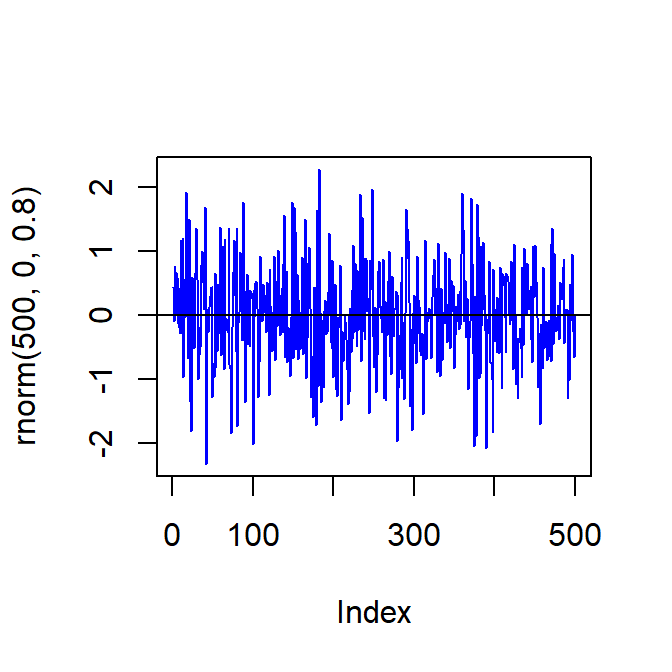
# AR(1)
ar_1 <- arima.sim(n = 500, list(ar = c(0.8)), sd = 0.8)
plot(ar_1, col = "blue")
abline(h = 0)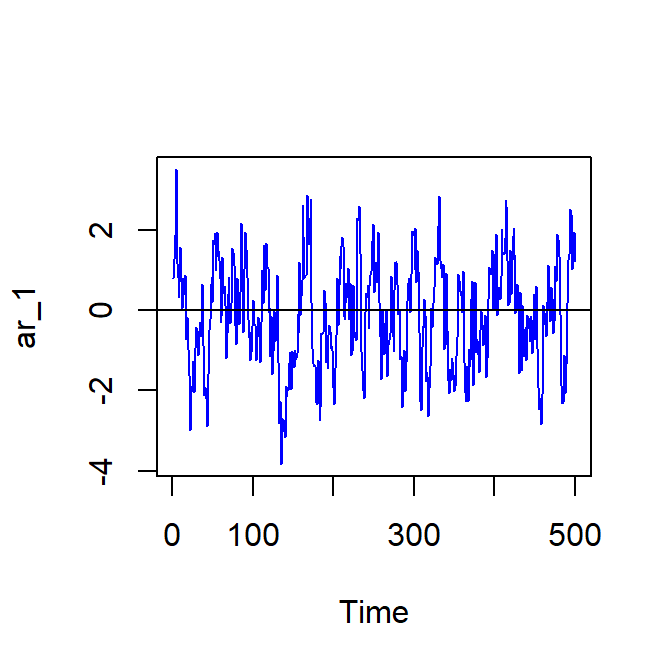
# AR(2)
ar_2 <- arima.sim(n = 500, list(ar = c(0.8, 0.15)), sd = 0.8)
plot(ar_2, col = "blue")
abline(h = 0)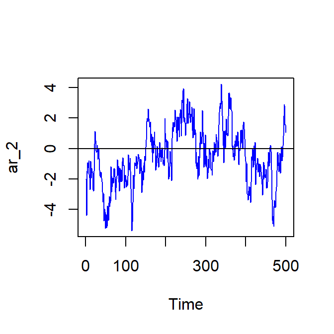
# AR(3)
ar_3 <- arima.sim(n = 500, list(ar = c(0.5, 0.3, 0.15)), sd = 0.8)
plot(ar_3, col = "blue")
abline(h = 0)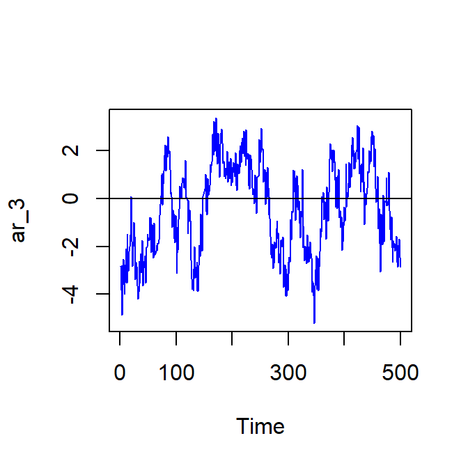
4.2.2 Autocorrelation Function for AR(1) processes
We can easily check that for positive lags \(l>0\), the lagged covariance follows:
\[\gamma_l = \phi_1\gamma_{l-1}\]
Hence it follows that for the autocorrelation function \(\rho_l = \phi_1\rho_{l-1}\); and because \(\rho_0=1\), \(\rho_l = \phi_1^l\). This implies that the autocorrelation function of an AR(1) series decays exponentially with rate \(\phi_1\) and starting value 1. If \(\phi_1<0\) the series alternates between positive and negative terms.
Illustration
For example let’s compute the sample autocorrelation function (ACF) for the financial market indices.
acf(ret_BSE, na.action = na.pass)
acf(ret_sp500, na.action = na.pass)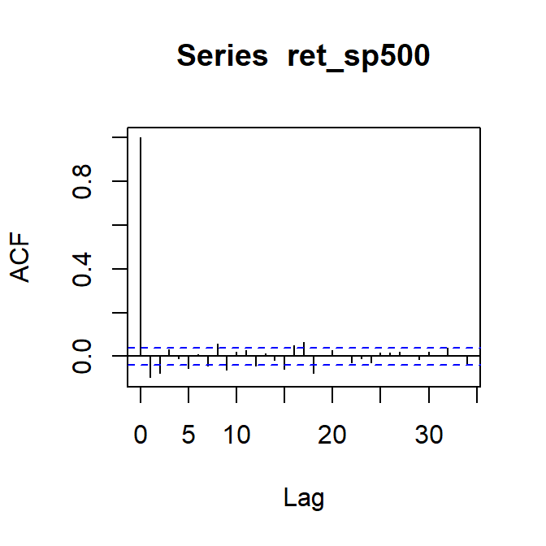
acf(ret_nikkei, na.action = na.pass)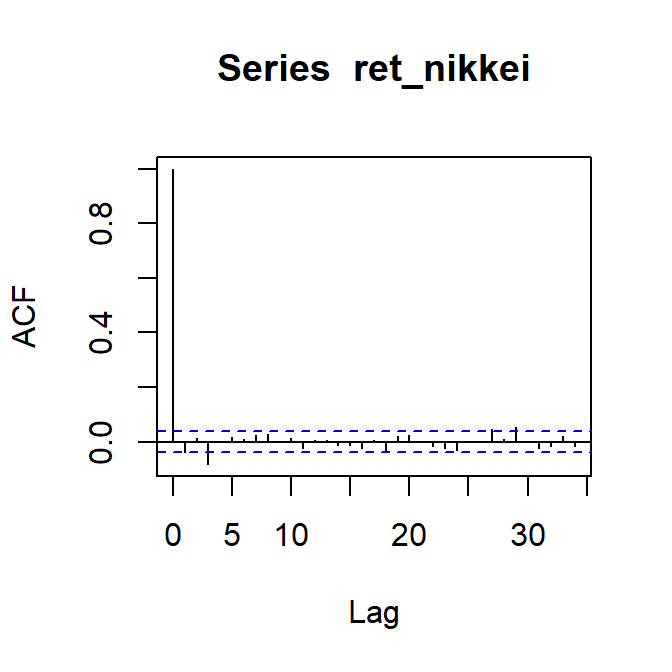
What about log-returns?
logret_BSE <- func_pr_to_logret(index_bse$Close)
logret_SP <- func_pr_to_logret(ind_sp500$SP500)
logret_Nikkei <- func_pr_to_logret(ind_nikkei$NIKKEI225)
ACF_BSE <- acf(logret_BSE, na.action = na.pass)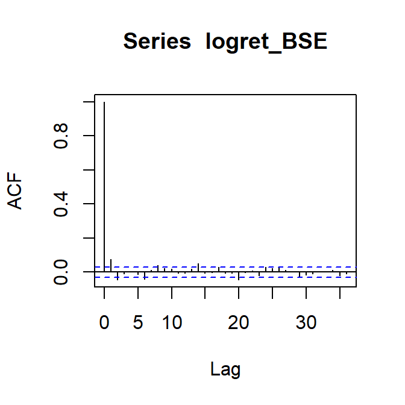
#barplot(head(ACF_BSE$acf))
ACF_SP <- acf(logret_SP, na.action = na.pass)#barplot(head(ACF_SP$acf))
ACF_Nikkei <- acf(logret_Nikkei, na.action = na.pass)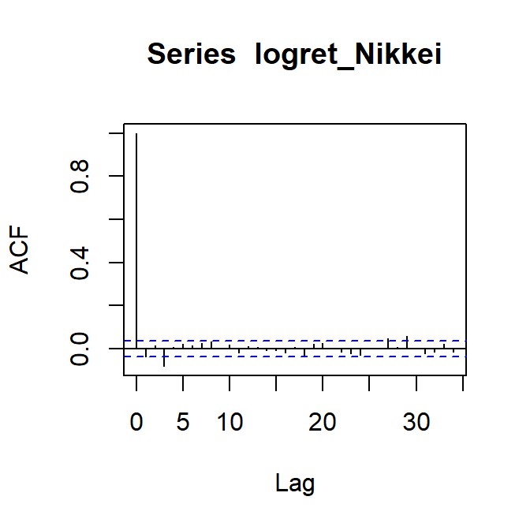
#barplot(head(ACF_Nikkei$acf))4.2.3 Partial Autocorrelation Functions (PACF)
Is there a way to know how many lags to include for an autoregressive return series? This issue is solved via the usage of partial autocorrelation functions as shown below.
Consider the following sequences of AR processes:
\[r_t=\phi_{01}+ \phi_{11}r_{t-1}+u_{1t}\] \[r_t=\phi_{02}+ \phi_{12}r_{t-1}+\phi_{22}r_{t-2}+u_{2t}\] \[r_t=\phi_{03}+ \phi_{13}r_{t-1}+\phi_{23}r_{t-2}+\phi_{33}r_{t-3}+u_{3t}\] \[r_t=\phi_{04}+ \phi_{14}r_{t-1}+\phi_{24}r_{t-2}+\phi_{34}r_{t-3}+\phi_{44}r_{t-4}+u_{4t}\] \[\vdots\]
These models are merely multiple regressions and can be estimated via the standard least squares method.
In these models, \(\hat{\phi}_{11}\) is called the lag 1 sample PACF of \(r_t\), \(\hat{\phi}_{22}\) of the second equation is the lag 2 sample PACF of \(r_t\) and so on. By construction, the lag 2 \(\hat{\phi}_{22}\) is the marginal contribution of \(r_{t-2}\) in explaining \(r_t\) over the AR(1) model and so on. Hence if the underlying model is say AR(\(p\)) then all sample PACFs \(\hat{\phi}_{11},\hdots, \hat{\phi}_{pp}\) must be different from 0 but all sample PACFs from then on: \(\hat{\phi}_{p+1,p+1}, \hdots=0\). This property can be used to find the order \(p\).
Armed with this knowledge, let’s compute the PACFs for the three financial market indices:
pacf(ret_BSE, na.action = na.pass)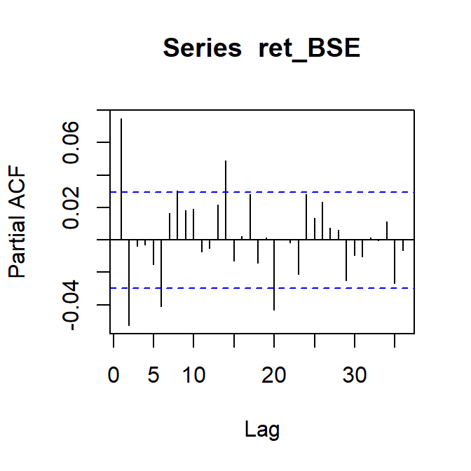
pacf(ret_sp500, na.action = na.pass)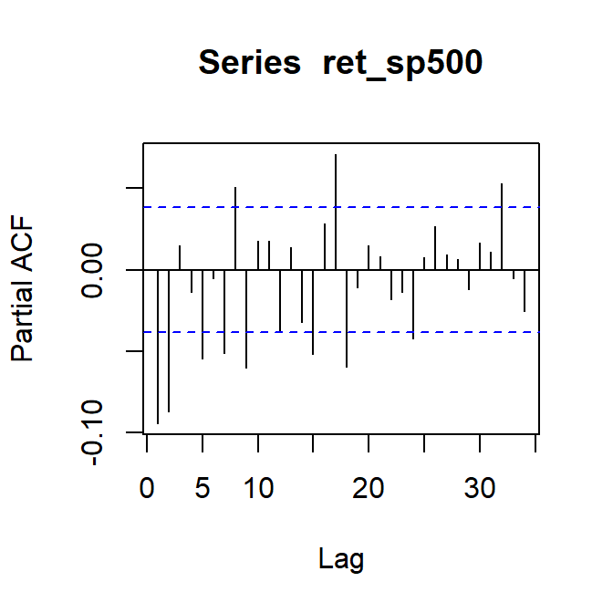
pacf(ret_nikkei, na.action = na.pass)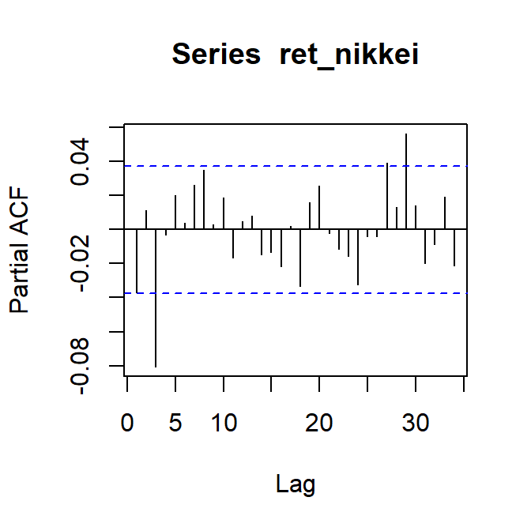
4.2.4 Information Criteria
Apart from PACF, another way to find the number of lags is the use of likelihood based information criteria. Here we look at the two most famous ones: the Akaike Information Criterion (AIC) and the Bayesian Information Criterion (BIC).
\[\text{AIC}(l) = -\frac{2}{T}\cdot\ln(\text{likelihood})+\frac{2}{T}\cdot(\#\text{parameters})\]
For a Gaussian AR(\(l\)), \(AIC=\ln(\hat{\sigma}^2_{u,MLE})+2\frac{l}{T}\). The first term measures the goodness of fit of the model while the second penalizes the usage of parameters.
The Bayesian Information Criterion (BIC) uses a different penalty function. For a Gaussian AR(\(l\)) is takes the following form:
\[BIC(l)=\ln(\hat{\sigma}^2_{u,MLE})+\ln(T)\cdot \frac{l}{T}\]
4.3 Moving Average (MA) Processes
Consider an infinitely long autoregressive process:
\[r_t = \phi_0+\phi_1r_{t-1}+\phi_2r_{r-2}+\hdots+u_t\]
If this series is to be weakly stationary, the coefficients \(\phi_j\) must decay sufficiently fast. One way to ensure this is to assume that \(\phi_j=-\theta^j\) for some \(\theta\in(0,1)\). \[r_t = \phi_0-\theta_1r_{t-1}-\theta_1^2r_{t-2}-\hdots+u_t\] \[r_t+\sum_{j=1}^\infty \theta_1^jr_{t-j}=\phi_0+u_t\] The same form can be written for \(r_{t-2}\): \[r_{t-1}+\sum_{j=2}^\infty \theta_1^jr_{t-j}=\phi_0+u_{t-1}\]
Solving for the above two equations, we get: \[r_t = \phi_0(1-\theta_1) + u_t -\theta_1u_{t-1}\]
This indicates the AR model is a weighted average of shocks \(u_t, u_{t-1}\) and a constant. This is a moving average form of order 1 or MA(1). It’s straightforward to check that unlike AR processes, MA processes are always stationary. (Can you see why?)
The general form for the MA(\(q\)) process is: \[r_t = c_0 + u_t -\theta_1u_{t-1}-\theta_2u_{t-2}-\hdots-\theta_qu_{t-q}\]
4.3.1 Autocorrelation Function
Consider the MA(1) model with the constant term 0:
\[r_{t} = u_t -\theta_1u_{t-1}\] \[r_{t-l}r_t = u_tr_{t-l} -\theta_1u_{t-1}r_{t-l}\] \[\mathbb{E}(r_{t-l}r_t)=0-\theta_1\mathbb{E}(u_{t-1}r_{t-l})\] From this we see that: \[\gamma_1=-\theta_1\sigma^2_u\] \[\gamma_{l>1}=0\] Also, \(\text{var}(r_t) =\gamma_0= (1+\theta_1^2)\sigma_u^2\) and this implies that for \(\rho_l = \frac{\gamma_l}{\gamma_0}\) becomes: \[\rho_0 = 1\] \[\rho_1 = -\frac{\theta_1}{1+\theta_1^2}\] \[\rho_{l>1} = 0\]
Hence for MA(1) processes, while the first lag autocorrelation is nonzero, all further lags produce zero autocorrelation. This property can be exploited to locate the order of the MA process. In general, for an MA(\(q\)) process, the ACF cuts off at lag \(q\). Since the MA(\(q\)) process only relies on its past \(q-1\) realization, it’s often called a ‘finite memory’ process.
To check the order of the MA series in question, we plot the ACF of the series. If \(\rho_q\neq 0\) but \(\rho_{l>q}=0\) we may conclude that the series is MA(\(q\)).
4.3.2 Illustrations
We simulate some moving average processes below:
n <- 500
# MA(0)
plot(rnorm(n), type = "l", col = "blue")
abline(h = 0)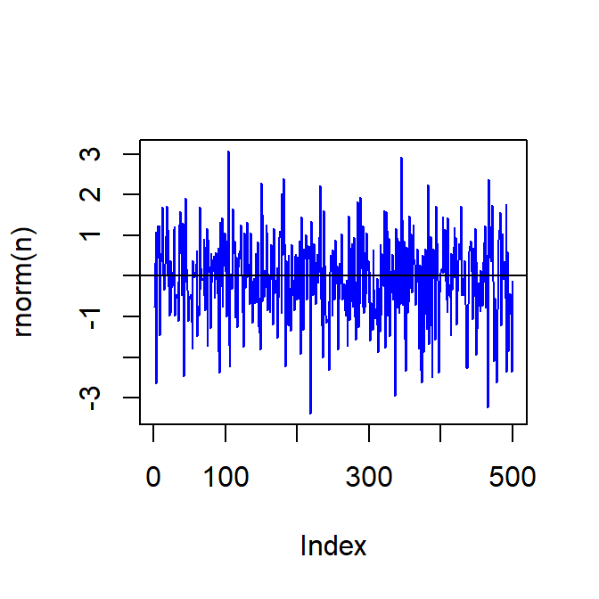
# MA(1)
ma_1 <- arima.sim(n = n, list(ma = c(0.8)), innov=rnorm(n))
plot(ma_1, col = "blue")
abline(h = 0)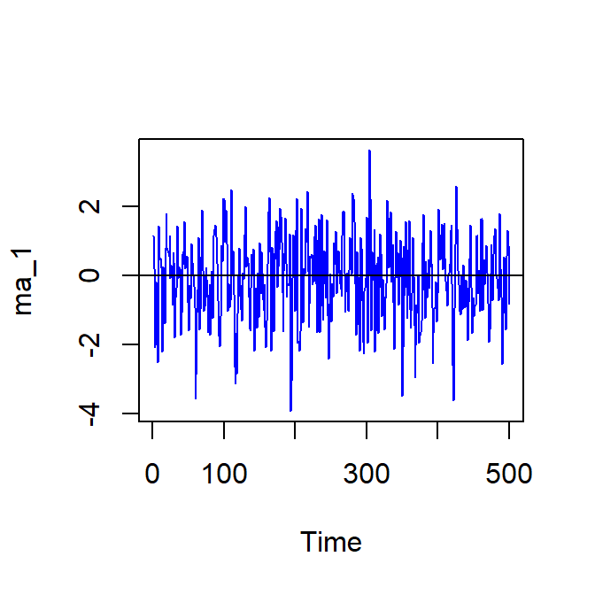
acf(ma_1)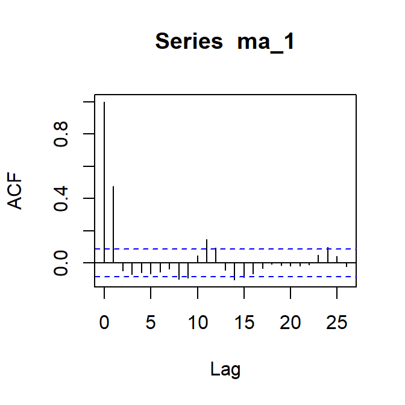
# MA(2)
ma_2 <- arima.sim(n = n, list(ma = c(0.8, 0.15)), innov=rnorm(n))
plot(ma_2, col = "blue")
abline(h = 0)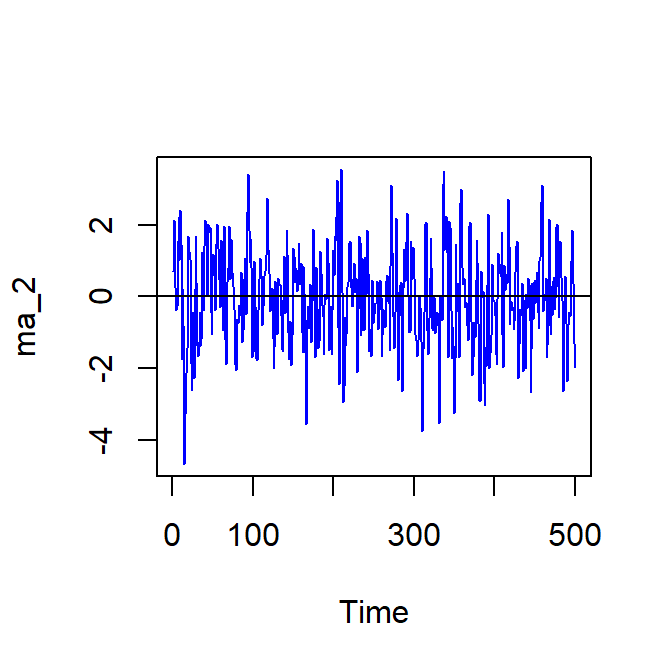
acf(ma_2)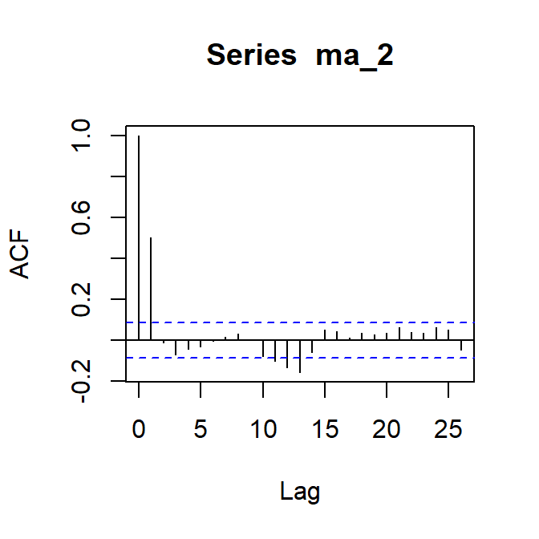
# MA(3)
ma_3 <- arima.sim(n = n, list(ma = c(0.5, 0.3, 0.15)), innov=rnorm(n))
plot(ma_3, col = "blue")
abline(h = 0)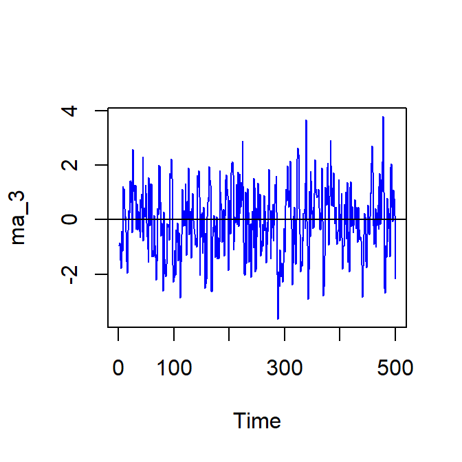
acf(ma_3)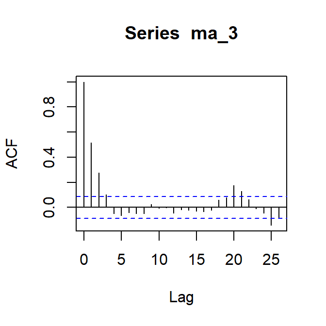
4.4 Autoregressive Moving Average (ARMA) Processes
While in principle we could fit empirical time series to AR(\(p\)) or MA(\(q\)) models exclusively, often the concomitant order is very high. In order to circumevent this problem, we combine AR and MA models into a composite ARMA(\(p,q\)) model with fewer parameters to estimate.
For example the ARMA(1,1) series is as follows: \[r_t-\phi_1r_{t-1} = \phi_0 + u_t -\theta_1u_{t-1}\]
The LHS is the AR component while the RHS is MA component.
4.4.1 Properties
Taking expectations we get: \[\mathbb{E}(r_t)-\phi_1\mathbb{E}(r_{t-1}) = \phi_0 + \mathbb{E}(u_t) - \theta_1\mathbb{E}(u_{t-1})\] \[\mathbb{E}(r_t) = \mu = \frac{\phi_0}{1-\phi_1}\]
This is the same exact mean as that of an AR(1) process. Solving for the stationarity of the variance we get the same condition for the parameter \(\phi_1\in (0,1)\) as that of the AR(1) model. It is not hard to derive the autocorrelation function of the ARMA(1,1) process which behaves the same way as that of an AR(1) process.
In general for an ARMA(\(p, q\)) process we have the following definition:
\[r_t = \phi_0 + \sum_{i=1}^p \phi_ir_{t-i}+u_t-\sum_{j=1}^q \theta_ju_{t-j}\]
Here are some simulations from ARMA models.
n_arma <- 300
#ARMA(1,1)
arma_11 <- arima.sim(n = n_arma,
list(ar = c(0.5), ma = c(0.5)),
innov = rnorm(n_arma)
)
plot(arma_11, col = "blue")
abline(h = 0 )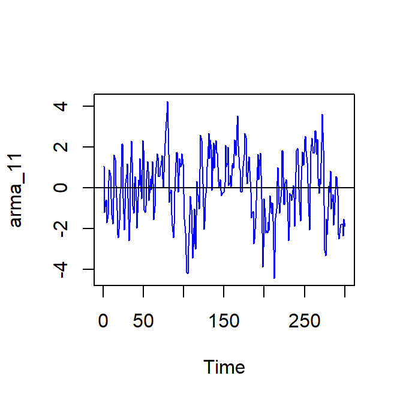
#ARMA(2,2)
arma_22 <- arima.sim(n = n_arma,
list(ar = c(0.5, 0.4), ma = c(0.5, 0.4)),
innov = rnorm(n_arma)
)
plot(arma_22, col = "blue")
abline(h = 0 )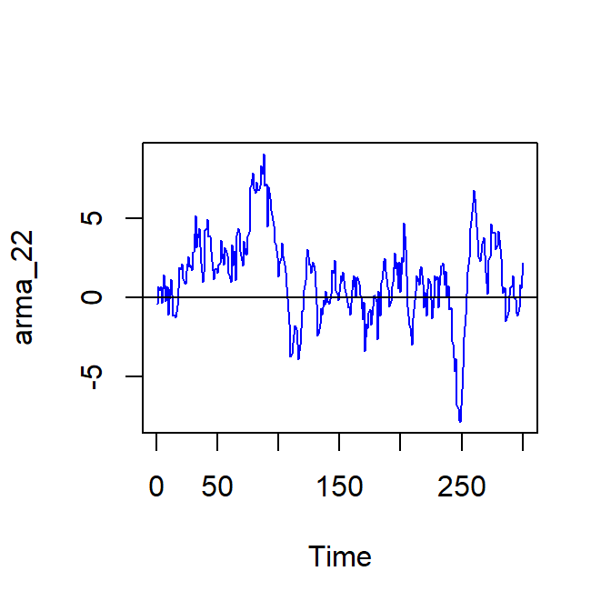
4.5 Conditional Heteroskedasticity Models
In empirical time series, we do not observe volatility directly but only estimate it with the help of some other directly observed characteristics. However as discussed in (Cont:2001?) volatility displays some striking regularities such as volatility clustering and differential reaction to price changes.
To investigate the volatility of empirical time series, we plot the daily returns and ACF of the Bombay stock exchange sensex.
plot(logret_BSE, type = "l", col = "blue")
abline(h = 0)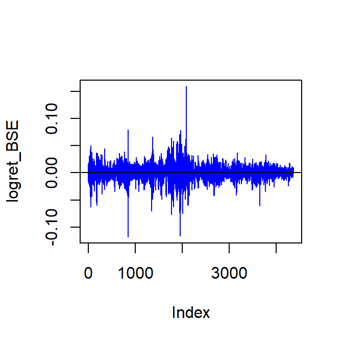
plot(acf(ret_BSE, na.action = na.pass))
While there seems to be no serial autocorrelation there is some dependence structure embedded in the series. We can check this for various functions of the return process such as squared returns or absolute returns:
ret_BSE_sq <- ret_BSE^2
acf(ret_BSE_sq, na.action = na.pass)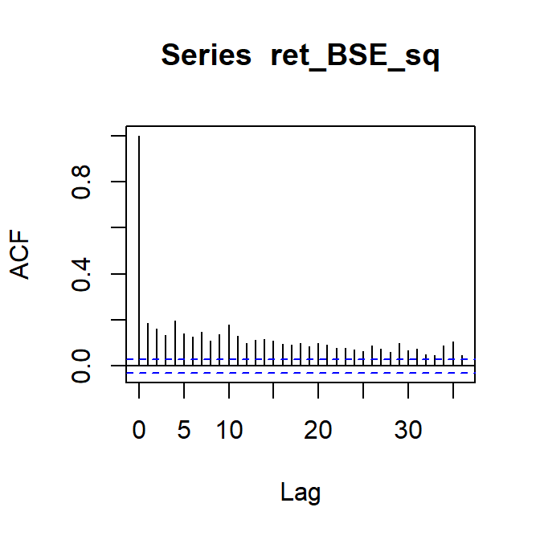
pacf(ret_BSE_sq, na.action = na.pass)
ret_BSE_abs <- abs(ret_BSE)
acf(ret_BSE_abs, na.action = na.pass)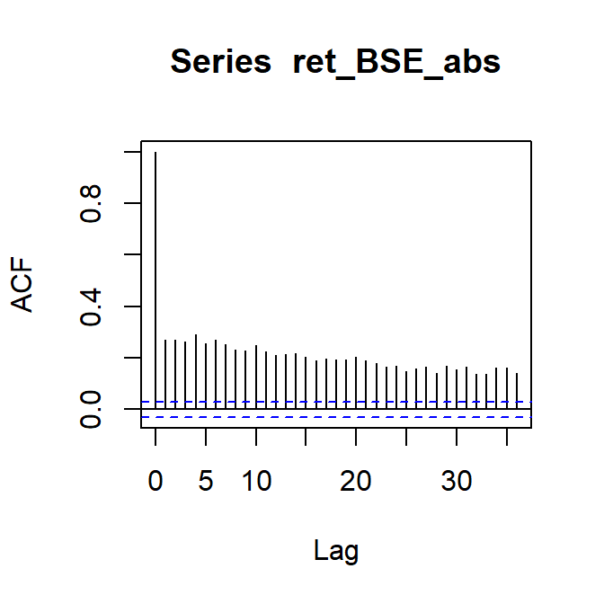
pacf(ret_BSE_abs, na.action = na.pass)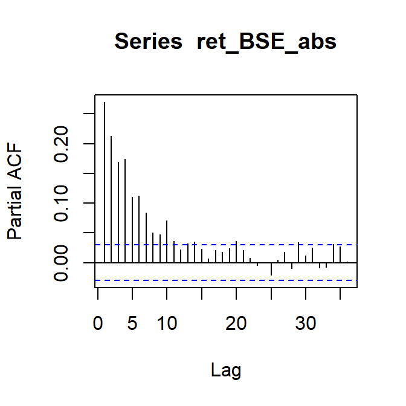
This behavior is also displayed by the other financial markets.
acf(ret_sp500^2, na.action = na.pass)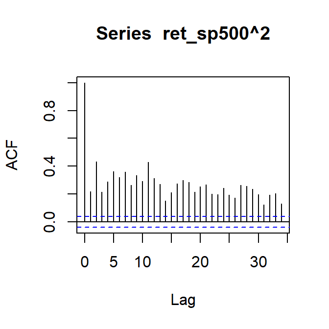
pacf(ret_sp500^2, na.action = na.pass)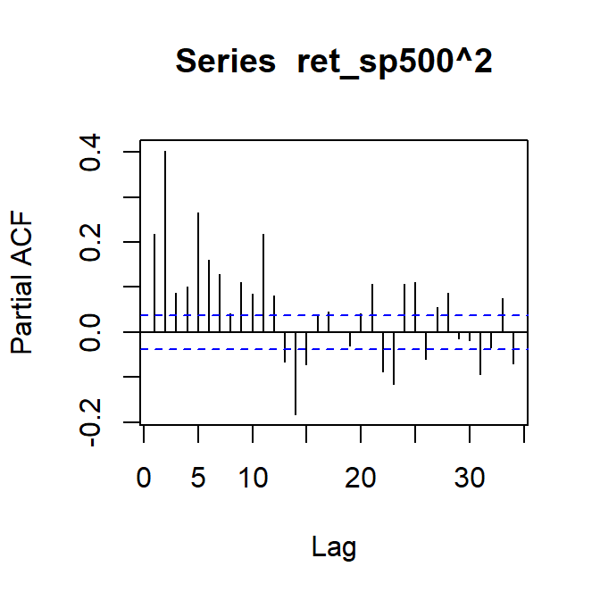
acf(ret_nikkei^2, na.action = na.pass)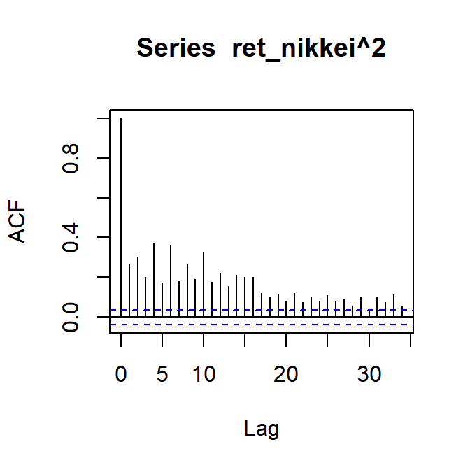
pacf(ret_nikkei^2, na.action = na.pass)The conditional mean volatility of the series may be written as:
\[\mu_t = \mathbb{E}(r_t|\mathbb{F}_{t-1})\] \[\sigma_t^2 = \text{var}(r_t|\mathbb{F}_{t-1}) = \mathbb{E}((r_t-\mu_t)^2|\mathbb{F}_{t-1}) =\text{var}(u_t|\mathbb{F}_{t-1})\]
Here \(\mathbb{F}(\cdot)\) denotes the ‘filtration’ or the information available at the given time.
4.5.1 ARCH Effect
Roughly speaking if the squared residuals display autocorrelation there exist ARCH effects (autoregressive conditional heteroskedasticity effects).
Consider \(r_t = \mu_t + u_t\). The square of the residual series \(u_t = r_t - \mu_t\) is of interest for estimating conditional heteroskedasticity. A popular method of testing for ARCH effects is via the Ljung and Box statistics applied to the squared residuals series.
To test if autocorrelations of \(\{r_t\}\) are jointly 0, the Portmanteau statistic (also called the Box-Pierce statistic) is used: \[Q^*_m = T\cdot\sum_{l=1}^m \hat{\rho}^2_l\]
The null hypothesis is \(H_0:\rho_1=\rho_2=\hdots=\rho_m=0\) and the alternative is that for some \(i\), \(\rho_i\neq 0\). If \(\{r_t\}_{t=1}^T\) are iid with some moment conditions, \(Q^*(m)\sim\chi^2(m)\).
The Ljung-Box test statistic is based on the Portmanteau statistic but increases its power via the following: \[Q(m)=T(T+2)\cdot\sum_{l=1}^m \frac{\hat{\rho}_l^2}{T-l}\]
We test for ARCH effects via the function Box.test() including in the stats() package
Box.test(rnorm(100)^2, type = "Ljung-Box") #Benchmark squared normals##
## Box-Ljung test
##
## data: rnorm(100)^2
## X-squared = 1.3782, df = 1, p-value = 0.2404Box.test(ret_BSE_sq, type = "Box-Pierce") #Squared BSE returns##
## Box-Pierce test
##
## data: ret_BSE_sq
## X-squared = 152.37, df = 1, p-value < 2.2e-16Box.test(ret_BSE_abs, type = "Ljung-Box") #Absolute BSE returns##
## Box-Ljung test
##
## data: ret_BSE_abs
## X-squared = 318.58, df = 1, p-value < 2.2e-16The same behavior is observed for the US and Japanese market indices
Box.test((ret_sp500)^2, type = "Ljung-Box") ##
## Box-Ljung test
##
## data: (ret_sp500)^2
## X-squared = 115.7, df = 1, p-value < 2.2e-16Box.test((ret_nikkei)^2, type = "Ljung-Box") ##
## Box-Ljung test
##
## data: (ret_nikkei)^2
## X-squared = 174.83, df = 1, p-value < 2.2e-16Hence we may safely conclude that the market indices in question display ARCH effects—i.e., their squared residuals display autocorrelation.
4.6 Autoregressive Conditional Heteroskedasticity (ARCH)
The essential idea behind ARCH models is that while the ‘shock’ or ‘innovation’ \(u_t\) is not autocorrelated, its squared lagged terms do display autocorrelation. In other words, the ARCH(\(m\)) process assumes:
\[u_t = \sigma_t\epsilon_t\] \[\sigma_t^2 = \beta_0 + \beta_1u_{t-1}^2+\hdots+\beta_mu_{t-m}^2\]
Here \(\epsilon_t\) is iid with mean 0 and variance 1; and all \(\beta_j\) are non negative, with \(\beta_0>0\). In practice it is common to assume that the shocks \(\epsilon_t\) are from a standard normal, standard \(T\) or some other suitable distribution. By construction, in ARCH models, large shocks tend to be followed by other large shocks.
4.6.1 Properties of ARCH(1) Processes
Consider the ARCH(1) model: \[u_t = \sigma_t\epsilon_t\] \[\sigma^2_t = \beta_0 + \beta_1u_{t-1}^2\]
Clearly the unconditional mean is \(\mathbb{E}(\mathbb{E}(u_t|\mathbb{F}_{t-1})) = 0\) and the variance is \(\text{var}(u_t)=\mathbb{E}(\mathbb{E}(u^2_t|\mathbb{F}_{t-1})) = \beta_0+\beta_1\mathbb{E}(u_{t-1}^2)\) and hence \[\text{var}(u_t) = \frac{\beta_0}{1-\beta_1}\]
In the same way if we compute higher moments and more specifically, the kurtosis we find that the excess kurtosis of \(u_t\) is positive or in other words, for an ARCH(1) process the shocks are more fat-tailed—more likely to produce extreme values. This is consistent with empirical observations.
4.6.2 Order Determination of ARCH(\(m\)) Processes
The ARCH(\(m\)) process is: \[\sigma_t^2 = \beta_0+\beta_1u_{t-1}^2+\hdots+\beta_mu_{t-m}^2\]
Since \(u_t^2\) is an unbiased estimator of \(\sigma_t^2\) we can interpret the ARCH(\(m\)) process as a special form of an AR(\(m\)) process for square errors.
If ARCH effects are deemed significant, we can employ the PACFs of squared residuals to find the order of the ARCH series just as we did for AR processes.
Hence we apply this idea to the market indices below.
pacf(ret_BSE_sq, na.action = na.pass)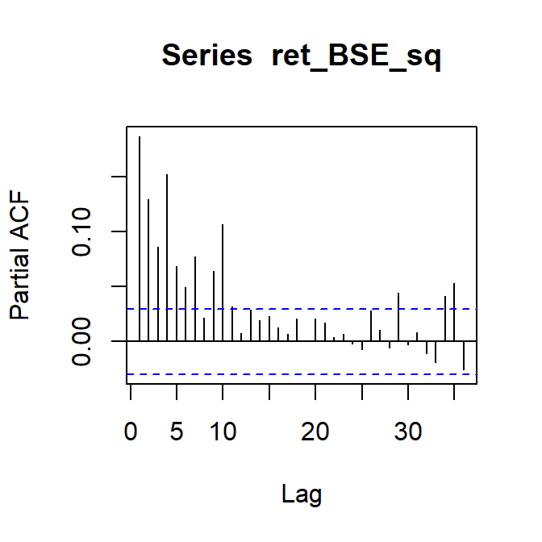
pacf((ret_sp500)^2, na.action = na.pass)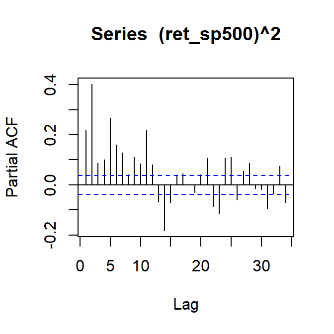
pacf((ret_nikkei)^2, na.action = na.pass)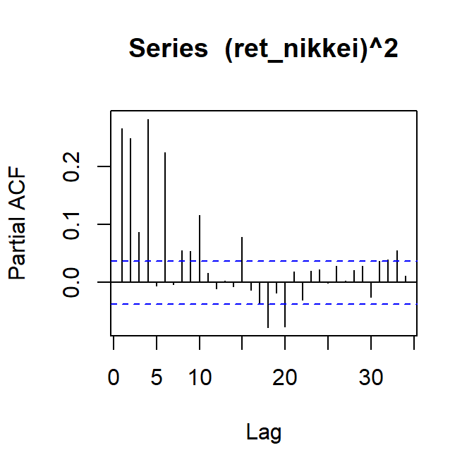
Depending on the distributional assumptions for \(\epsilon_t\) we use different forms of the maximum likelihood estimation for estimating ARCH processes. Additionally to check if the ARCH model is well specified, we notice that \(\tilde{u}_t = \frac{u_t}{\sigma_t}\) is an iid sequence.
4.7 Generalized ARCH (GARCH) Processes
Usage of GARCH models can shorten the order of the corresponding ARCH models. A GARCH(\(m,n\)) process is: \[u_t = \sigma_t \epsilon_t\] \[\sigma_t^2 = \alpha_0 + \sum_{i=1}^m \alpha_iu_{t-i}^2 + \sum_{j=1}^n \beta_j\sigma_{t-j}^2\]
GARCH series can be thought to be ARMA series for the squared error \(u_t^2\). GARCH models are consistent with the phenomenon of volatility clustering and thei tail distribution is fatter than that of normals.
4.8 Application: Fitting ARMA GARCH Models
We check if the three financial market indices can be fitted satisfactorily to ARMA GARCH processes.
4.8.1 The Bombay Stock Exchange
# For lag order indication of MA and AR resp
acf(ret_BSE, na.action = na.pass)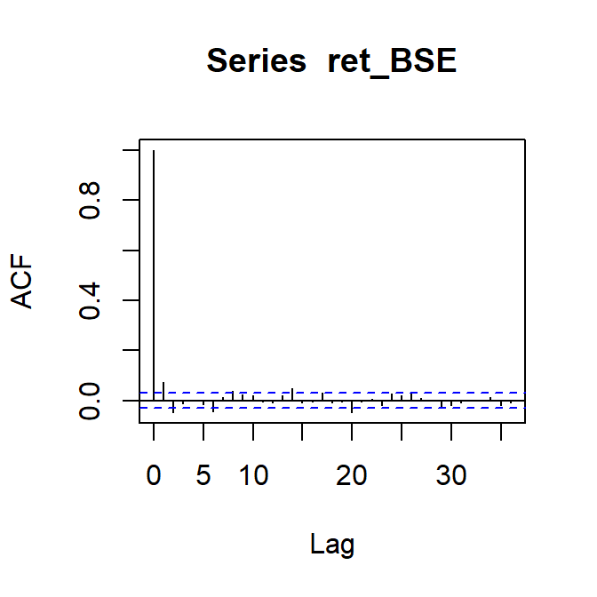
pacf(ret_BSE, na.action = na.pass)
# For lag order of ARCH and GARCH
acf(ret_BSE_sq, na.action = na.pass)
We will use two main functions for estimating such models. One is the function tseries::garch() which may be used for relatively simple fittings and the other are sets of functions from the package rugarch which offers more options including a diverse set of distributions for the innovations.
# Specify an ARMA(1,1) GARCH(1,1) model
spec_garch_BSE <- rugarch::ugarchspec() #empty specification
# Estimate it
est_garch_BSE <- rugarch::ugarchfit(data = !is.na(ret_BSE), #note
spec = spec_garch_BSE
)
show(est_garch_BSE)##
## *---------------------------------*
## * GARCH Model Fit *
## *---------------------------------*
##
## Conditional Variance Dynamics
## -----------------------------------
## GARCH Model : sGARCH(1,1)
## Mean Model : ARFIMA(1,0,1)
## Distribution : norm
##
## Optimal Parameters
## ------------------------------------
## Estimate Std. Error t value Pr(>|t|)
## mu 1.00000 0.000069 14564.3352 0.000000
## ar1 0.00000 0.141076 0.0000 1.000000
## ma1 0.24873 0.160545 1.5493 0.121319
## omega 0.00000 0.000000 4.6840 0.000003
## alpha1 0.05000 0.009125 5.4792 0.000000
## beta1 0.90000 0.001924 467.7716 0.000000
##
## Robust Standard Errors:
## Estimate Std. Error t value Pr(>|t|)
## mu 1.00000 0.000095 10551.5613 0.00000
## ar1 0.00000 0.339224 0.0000 1.00000
## ma1 0.24873 0.185917 1.3378 0.18095
## omega 0.00000 0.000000 1.3490 0.17734
## alpha1 0.05000 0.005717 8.7463 0.00000
## beta1 0.90000 0.003441 261.5554 0.00000
##
## LogLikelihood : 24036.84
##
## Information Criteria
## ------------------------------------
##
## Akaike -11.006
## Bayes -10.997
## Shibata -11.006
## Hannan-Quinn -11.003
##
## Weighted Ljung-Box Test on Standardized Residuals
## ------------------------------------
## statistic p-value
## Lag[1] 1.325 0.2497
## Lag[2*(p+q)+(p+q)-1][5] 1.397 0.9992
## Lag[4*(p+q)+(p+q)-1][9] 1.406 0.9980
## d.o.f=2
## H0 : No serial correlation
##
## Weighted Ljung-Box Test on Standardized Squared Residuals
## ------------------------------------
## statistic p-value
## Lag[1] 0.0003950 0.9841
## Lag[2*(p+q)+(p+q)-1][5] 0.0003963 1.0000
## Lag[4*(p+q)+(p+q)-1][9] 0.0003964 1.0000
## d.o.f=2
##
## Weighted ARCH LM Tests
## ------------------------------------
## Statistic Shape Scale P-Value
## ARCH Lag[3] 5.943e-09 0.500 2.000 0.9999
## ARCH Lag[5] 6.164e-09 1.440 1.667 1.0000
## ARCH Lag[7] 6.700e-09 2.315 1.543 1.0000
##
## Nyblom stability test
## ------------------------------------
## Joint Statistic: -1907.443
## Individual Statistics:
## mu 701.24
## ar1 31.71
## ma1 34.82
## omega 1367.22
## alpha1 103.39
## beta1 1151.78
##
## Asymptotic Critical Values (10% 5% 1%)
## Joint Statistic: 1.49 1.68 2.12
## Individual Statistic: 0.35 0.47 0.75
##
## Sign Bias Test
## ------------------------------------
## t-value prob sig
## Sign Bias 3.366e+01 5.475e-221 ***
## Negative Sign Bias 1.172e+03 0.000e+00 ***
## Positive Sign Bias 8.267e+01 0.000e+00 ***
## Joint Effect 1.659e+06 0.000e+00 ***
##
##
## Adjusted Pearson Goodness-of-Fit Test:
## ------------------------------------
## group statistic p-value(g-1)
## 1 20 82257 0
## 2 30 125641 0
## 3 40 169128 0
## 4 50 212660 0
##
##
## Elapsed time : 0.2209284.9 References
For a general AR(\(p\)) process, the corresponding condition is: \(|\phi_1|+|\phi_2|+\hdots+|\phi_p|<1\).↩︎